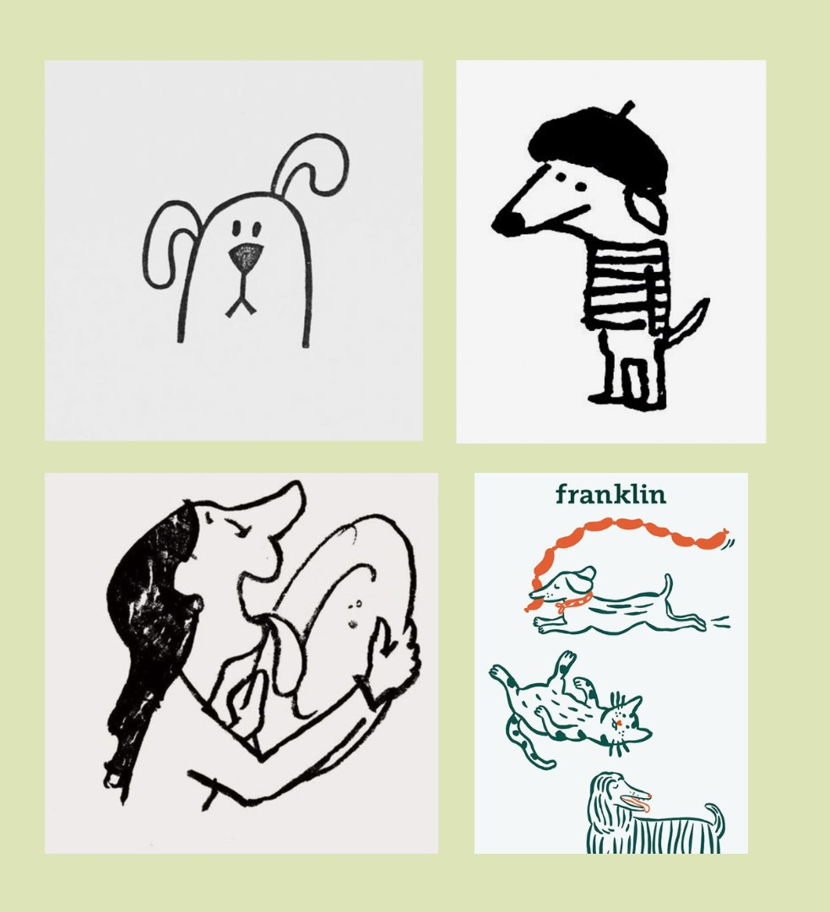

General Information
This extraordinary website is publicly available at https://eva121416.github.io/Woof.Website/
This website was created by:
- Student (ID: 223700)
- Student (ID: 225012)
- Student (ID: 220395)
- Student (ID: 236980)
Content
Our brand is called 'Woof!'
Here is our logo:

Credits for reference picture above

| # | Student ID | Material | Name and link of content |
|---|---|---|---|
| 1. | 236980 | Vision, values, brand persona |
Vision and Values Brand Persona |
| 2. | 220395 | Brand name, logo, style guide, supporting visuals (jars) |
Brand Name + Logo Style GuideJars |
| 3. | 223700 | Supporting visuals (rest of website) | Woof Website |
| 4. | 225012 | Description of jars | Jars |
Production
Design Elements
-
The two shades of green represent sustainability and our connection with nature. Green evokes feelings of freshness, growth, and harmony with the environment.
This light green gives the website a sense of lightness and freshness, and evokes a feeling of calmness, peace, and harmony with nature. It creates a pleasing background. - This dark green is used for contrast, and emphasis. It adds sophistication, stability, and reliability.
- This off-white colour symbolizes responsibility, cleanliness, and simplicity. Off-white provides a clean and sophisticated look for our brand, reflecting our commitment to transparency and responsibility for the products we create.
- This brown is associated with nature and the earth, highlighting our commitment to sustainability, zero waste practices and love for nature.
- Orange is positioned on the opposite to brown on the wheel of colors. It adds contrast and energy to our pallete. Orange represents positivity, playfulness, and friendliness, aligning with the vibrant and lively nature of dogs - thus the traits that the “pet parents” love about them (and our brand). It gives our brand a feeling of warmth and vitality. It will be used for key messages, calls to actions, and elements that the user should focus on.
- Dog doodle Objest via Facebook
- Dog in Beret Soma Gallery via Pinterest
- “Franklin” dogs Soma Gallery via Pinterest
- Woman licking plate Pepsi Smile via Pinterest
- Grids: Grant us the ability to organize our vision and values, video header and so on neatly while also maximising the screen space. This works well with our fonts to give the user a clear layout, as if allowing them space to breathe as they maneuver through our pages.
- Containers: These are used to display our 4 values, the cards showing our products and our contact us form. All of these elements are rounded to give a playful and friendly feel, which is how we want to portray our brand.
- Carousel: Promotes user interaction by allowing them to click through our reviews. Makes the website more dynamic and playful which aligns with our brand personality and logo. This ties in with our marketing and communication strategy, where we want to convey our playful yet informative personality. The use of a carousel for this is to give the feeling that the reviews are never-ending, hence our brand is highly-accredited by our customers.
- Top navigation bar: It provides a consistent and familiar navigation experience across our website. The drop-down menu allows for easy access to the multiple parts on the Shop page.
- Contact form: Enables the user to give us feedback and connect with us on a personal level. It is a structured interaction point that guides users through the contacting process by asking for their name, email, etc.
- Buttons: Allow our users to take our dog food/treat personalization quiz and purchase our products. This is a dynamic way to communicate our unique value proposal, which is that we give our customers the ability to fully customize the dog food and treats they can purchase from us.
Our Colour Scheme
These colours together evoke a feeling of nature and health, which helps convey our values of high quality ingredients and full customization ability of dog food and treats, hence the perfect matching of products to optimise dog health.
Logo Design
The style of the line in our logo is intentionally free-flowing and dynamic to convey care-free spirit, and cheerfulness. It aims to evoke a sense of friendliness and playfulness. We wanted to give our logo and brand a feeling, often associated with running happily dogs (one of the reasons why dog parents love them) - spontaneity and "foolishness", highlighting the delight of a dirty but happy dog. Take a look here: Logo
Reference pictures for style:
Credits for reference pictures above
Developing the logo:
Typography
Serif fonts for titles - This is strategically aligned with our brand's values and target audience preferences. Serif fonts convey a sense of reliability, authenticity, credibility, and trustworthiness, which resonates with millennials who prioritize scientifically proven actions and conduct thorough research before making purchases. By using serif fonts for titles, we aim to instill trust in our brand among millennials, emphasising our commitment to environmental responsibility and scientific research (Vlahos, 2023; Zain, 2023).
STIX Two Text - This is a distinct font that is great for titles. It demands attention without being overwhelming. See it here.
Poppins - This font has a very clear look. It is perfect for long body paragraphs, providing numbers and data. It is accessible as it is easy to read. Important text will be written in italics. See it here.
Tone of Voice
Our Tone of Voice is Semi-formal - Informative with the implementation of humor. It is playful.
Millenials’ ToV in communication and copywriting is direct, clever, and has a conversational style. Millennials love casual “write as I talk” copy, and they like to be straight to be point. This generation enjoys the implementation of memes, and popular cultural references, as well as the use of CAPS LOCK in social media posts, and emojis to express enthusiasm. Despite all this information, millenials can easily detect and reject copy/marketing attempts that feel pushy or inauthentic. Natural and genuine communication resonates the most with this demographic (Magalhães, n.d.).
User Interface
User interface patterns used:
Structure of Main Page
In the Shop page (our Main page), we start with our navigation bar. This is with our off-white colour and Poppins font to give it a clean appearance. Beneath that, we chose a video header as opposed to an image header as it is more attention-grabbing. The video is of a dog to communicate that our brand is related to dogs and is for our target group - dog owners. The dog is wagging its tail which shows that it's happy, therefore implying that our brand will also make dogs happy. There is text over this video header that communicates our main feature and unique value proposal - the personalization of dog nutrition. We added a button for users to complete the quiz so they can immediately receive our service by pressing on it. Once the quiz is completed, the user is redirected to a product page of the product best for their dog. This is currently non-functional in the website but this is the idea of it. We then move into a part where users can shop our bestsellers, to give them an idea of what our products look like. For previous users, this is an easier way of purchasing a product they've previously purchased, without having to complete the quiz again. Then we move on to reviews, to boost our credibility as a brand. The contact form afterwards is to show customers that our brand is receptive to feedback and that we are open to forming a more personal connection with them. All of the titles are underlined with orange as this is our most eye-catching colour and grabs the user's attention while scrolling.
Structure of 'Why Woof?' Page
In the 'Why Woof?' page, we share our brand vision and values. This is done to advocate for ourselves as a brand and show people using our website why they should purchase from us. We start with a photo of a dog, to tie into our target group - dog owners. Then we state our vision, which has its own container on the page and it is in the center. This makes it feel like more of an important element, which encourages users to read it. It is underlined by a dark green to demand attention to it. Orange was not chosen for this as it is a less serious colour as compared to dark green, and for our vision we want to show that this section of our website is more serious. Additionally, the borders for the values below are orange and having the vision underlined in orange too would take away from this. The values below it are arranged in a zig-zag pattern to make this section more visually appealing. Every value is accompanied by an image that matches the copy, to communicate the values visually as well. The borders of the containers of the values are in our orange, as this contrasts well with the light green background and makes the values stand out.
Structure of 'Our Stores' Page
In the 'Our Stores' page, there is only an image banner, the same one as in 'Why Woof?'. This page was created so that all parts of the navigation bar were functional, however it was not developed as it is part of future devleopment.
Credits
- The source code for the video container is from Rob Verhagen (Thank you Rob! :D)
- The source code for the alignment of containers and grids is from Stack Overflow Forum
- The source code for the 'Contact us' section is from W3Schools
- The source code for the CSS text-shadow property is from W3Schools
- Main dog video Evgenia Kirpichnikova via Pexels
- Main dog photo Camylla Battani via Unsplash
- Individuality Value photo PicsbyFran via Pixabay
- Dog parent community Value photo 5688709 via Pixabay
- Woofing truthfully Value photo huoadg5888 via Pixabay
- Quality ingredients Value photo Larisa-K via Pixabay
- Carousel photo one Daniel Lloyd Blunk-Fernández via Pixabay
- Carousel photo two Karsten Winegeart via Pixabay
- Carousel photo three Tran Mau Tri Tam via Pixabay
Code Credits
Image & Video Credits
Testing Report
- Is the Navigation Bar easy to use?
- Do the names of the different pages make sense to the user?
- Does the user know how to use the elements shown (button, cards, carousel)?
- Does the user think that these elements make sense?
- Does the user understand what our brand is about?
- Is the website cohesive?
- We tested our website with 6 participants at BUas. They were all dog owners.
- The testing was recorded with video using a phone. The videos are in the following OneDrive link: https://eva121416.github.io/Woof.Website/
- 3 of our participants tested the website on a computer and the other 3 on a mobile phone. Instructions given:
- Find out which type of food is best for your dog.
- Please navigate to the page where you would find more information about the backstory of our brand.
- Check our reviews and read through them.
- Reach out to us about a concern.
- Purchase the carrot and lamb food.
- Please describe your experience with our website.
- Please describe what you think our brand is about.
- What do you think about the colours? Do they match the content?
- Is there anything that you think we should add?
Our testing goals:
Our testing protocol:
- After asking the testers to “purchase the “Carrot and Lamb” treats, they all scrolled to our bestsellers section of our website and clicked “Buy Now” under the correct jar.
- We asked testers to “find out what is the best food for your dog”. For five of them, it was clear that they had to go to our quiz, as they immediately did so. However, one of them went to the bestsellers/jars that we have on our website, read the descriptions, and made the choice that the “Beetroot and Lamb” treats were best for their dog, as their dog likes those flavours.
- When asked to reach out to us, five testers immediately scrolled down to the “Woof to us” section of our website, or clicked on this in the navigation bar, which told us that it was clear. One of the testers went to the “Corporate” page for this.
- All six of our testers thought that the colours on our website matched the content. One of them mentioned that our colours give the vibe of healthy food with the green colours, and that the orange reminded the tester of carrots, which is one of our bestselling flavours, and is tied to our value of personalization as we are promoting healthier dog food and treats. Another tester said that our colours give a woody/outdoor feel, which matches the brand and our value of sustainable sourcing. Additionally, one of our testers mentioned that there is good consistency between the pictures that we use on our website.
- All three of our mobile testers struggled to view the "Reviews" carousel on their phones. The carousel was not responsive for mobile and because it was so small, the words disappeared, therefore the reviews could not be read.
- The contact form was not optimized for mobile and was much longer in length than the phone screen. This made it difficult for all three mobile testers to type and submit their feedback.
- Two testers suggested displaying a wider variety of products, providing specific recommendations for each product type, and including more detailed information, such as nutritional facts.
- The mobile version of the website is now more responsive. Both the carousel and contact form have been adapted for mobile and are more functional. This greatly improves user experience and trust in our brand.
- Two testers mentioned that the logo was too small in the navigation bar. This has since been slightly enlarged. This helps users connect with our brand better.
- We would add more products to our page with more information. Users will be provided with details of the products like for which dogs they are best for, ingredients, etc. This would improve our brand transparency and help make the audience feel well-informed when browsing our website. This will, in turn, improve brand loyalty.
- Change the position of 'Reviews' to the 'Why Woof?' page for greater brand credibility to help users justify purchasing from us.
- Monday 14:00
- Wednesday 14:00
- Friday 15:00
- Monday 14:00
- Wednesday 14:00
- Friday 14:00
- average followers: 120 K
- average likes: 457 per post
- average comments: 24 per post
- average shares: 35 per post
- engagement rate*: for every 7 likes there is one engaging user
- average followers: 95 K
- average likes: 57 per post
- average comments: 23 per post
- average shares: 3 per post
- engagement rate*: for every 2 likes there is one engaging user
- 3000 views total by 4 April 2024
- Followers
- 100 followers total by 4 April 2024 - seeing the competition’s social media such an objective was realistic for Woof to achieve in one month
- Brand Engagement
- 1 comment under each post by 4 April 2024 - commenting engagement was quite frequent on the competition’s Instagram, therefore we set that 1 comment per post
- Word of mouth
- 1 reshare for every 3 posts by 4 April 2024 - as Woof does not have a strong community build yet, unlike our competition, we knew that reshares wouldn’t be so frequent. Therefore we aimed for 1 reshare for every 3 posts
- Followers from reels
- 2 new followers for each published reel by 4 April 2024 - we wanted to observe whether the reels will bring a higher response, and if so we were curious what kind of reels would bring the highest. Therefore we aimed to monitor the “followers from reels” also with the intention of having 2 new followers for every published reel
- 2000 views total on posts, stories and reels by 4 April 2024 - adjusted accordingly to the fact that fewer people followed the same brands on Facebook than on Instagram
- Followers
- 20 followers total by 4 April 2024 - same reason as above
- Brand Engagement
- 1 comment for every 3 posts by 4 April 2024 - same reason as above
- Word of mouth
- 1 reshare for every 5 posts by 4 April 2024 - same reason as above
- Create brand connection by
- embracing the individuality of each dog in a humorous way
- focusing on dog care by providing information about high-quality products, transparency in production
- Make them feel making a good choice when purchasing Woof products, by
- being transparent about the sourcing of our materials; local farms, and certified sources
- sustainability; zero waste practices, such as returnable jars, zero waste stores, products from recycling, sourcing ingredients from local providers
- Establish our brand as their trusted partner in ensuring the comprehensive care and happiness of their dogs, by
- informing about high-quality ingredients from local farms
- advertising food that improves dog’s health and well-being
- food that embraces each dog’s uniqueness, by offering personalization, which targets individual needs, allergies, and preferences
- 1000 views gained from all posts by 2 May 2024
- Followers
- 150 followers total by 2 May 2024.
- Brand Engagement
- 1 comment under each post by 2 May 2024
- Word of mouth
- 1 reshare for every 3 posts by 2 May 2024
- Followers from reels
- 2 new followers for each published reel by 2 May 2024
- Create brand connection by
- embracing the quirky things we love about dogs
- producing Tik Tok Trends, but featuring dogs instead of people
- embracing the individuality of each dog in a humorous way
- showing behind the scenes from our store and production - focusing on dog care by providing information about high-quality products, transparency in production
- publishing pictures and videos created only by Woof
- Make them feel making a good choice when purchasing Woof products, by
- being transparent about the sourcing of our materials - speak about local farms, and certified sources
- sustainability; zero waste practices, such as returnable jars, zero waste stores, products from recycling, sourcing ingredients from local providers
- Establish our brand as their trusted partner in ensuring the comprehensive care and happiness of their dogs, by
- informing about high-quality products
- embracing the quirky things we love about dogs
- food that embraces each dog’s uniqueness, by offering personalization, which targets individual needs, allergies, and preferences
- 3000 views total by 2 May 2024.
- Followers
- 100 followers total by 2 May 2024.
- Brand Engagement
- 1 comment under each Tik Tok by 2 May 2024.
- Interest
- 1 “save” for every 3 Tik Toks by 2 May 2024.
- Create brand connection by
- embracing the quirky things we love about dogs
- producing Tik Tok Trends, but featuring dogs instead of people
- embracing the individuality of each dog in a humorous way
- showing behind the scenes from our store and production - focusing on dog care by providing information about high-quality products, transparency in production
- publishing pictures and videos created only by Woof
- Make them feel making a good choice when purchasing Woof products, by
- sustainability; zero waste practices, such as returnable jars, zero waste stores, products from recycling, sourcing ingredients from local providers
- Establish our brand as their trusted partner in ensuring the comprehensive care and happiness of their dogs, by
- embracing the quirky things we love about dogs
- food that embraces each dog’s uniqueness, by offering personalization, which targets individual needs, allergies, and preferences
- Rent for the café space
- Lease for the café space
- Utility bills for the café space
- Café equipment depreciation
- Workers’ salaries
- General liability insurance
- Raw materials
- Costs of goods sold (coffee, milk, etc.)
- Packaging costs
- Delivery costs
- Production costs
- Rent for the café space
- Lease for the café space
- Utility bills for the café space
- Café equipment depreciation
- Workers’ salaries
- General liability insurance
- Raw materials
- Costs of goods sold (coffee, milk, etc.)
- Packaging costs
- Delivery costs
- Production costs
- Food Licences (non-GMO, SF/SF)
- 3000 views - realistic to achieve on Instagram
- Followers
- 100 followers - seeing competition’s social media such objective was realistic for Woof to achieve in one month
- Brand Engagement
- 1 comment under each post - commenting engagement was quite frequent on competition’s Instagram, therefore we set that 1 comment per post is a realistic objective
- Word of mouth
- 1 reshare for every 3 posts - as Woof does not have a strong community build yet, unlike our competition, we knew that reshares won’t be so frequent. Therefore we aimed for 1 reshare for every 3 posts
- Followers from reels
- 2 new followers for each published reel - we wanted to observe whether the reels will bring higher response, and if so we were curious what kind of reels would bring the highest. Therefore we aimed to monitor the “followers from reels” also to have 2 new followers for every published reel
- 2000 views - adjusted accordingly to the fact that less people followed the same brands on facebook than on Instagram
- Followers
- 20 followers - same reason as above
- Brand Engagement
- 1 comment for every 3 posts - same reason as above
- Word of mouth
- 1 reshare for every 5 posts - same reason as above
Our testing results:
Positive aspects of the UI/UX design:
Good usability and intuitive navigation:
Cohesive colour scheme and brand consistency:
Negative aspects of the UI/UX design:
Inconsistencies in the mobile version:
Flaws in product presentation
Improvements mentioned:
Already changed:
Potential changes:
Marketing
Context of campaign and promotional activities
Woof decided to focus on millennials aged 28-38 as its target audience. Research has shown that this demographic has a strong emotional connection to their dogs, often referring to themselves as “dog parents” (McVanel, 2023). Dogs frequently serve as companions to millennials, helping them combat loneliness, depression, and anxiety (Madwantsi, 2023). Additionally, millennials, due to their unconventional lifestyles including marrying later, freelance work, and delaying having children, often opt to have a dog instead of a kid, treating them as their children. They place significant emphasis on the products they buy for their dogs, prioritizing high-quality ingredients and overall product quality. Therefore they are willing to pay more to ensure the best products for their puppies (Odendaal, 2023). Furthermore, millennials highly value personalization not only for themselves but also for their pets (McVanel, 2023).
Knowing that Woof’s target group, millennials, enjoy clever, humorous copywriting, Woof’s social media campaign is designed to evoke laughter. With its content, Woof builds trust and community engagement, as well as promotes the company’s sustainable practices. The social media visuals are clean and clear. Well-designed content builds loyalty, and credibility, and provides a consistent brand experience (Pandey and Pandey, 2024), Woof strives to have high-quality photos, and videos that fit the colour palette and show the company’s love for dogs.
Woof‚Äôs Tone of Voice is humorous, and genuine, reflecting the preferences of the target group, as millennials easily reject marketing that feels pushy or inauthentic (Ahmed, 2024). Knowing that millennials enjoy the use of humour, implementation of caps lock, and emojis to express enthusiasm (Magalh√£es, n.d.), Woof relied on funny captions such as *‚ÄúHas your dog had a RUFF day? üò™¬†Grab a paw-fee with your furry friend at one of our locations ‚òïÔ∏è [‚Ķ]‚Äù.*
Moreover, after analysis of competitors‚Äô social media (e.g. Beco, FreshPet, The Farmer‚Äôs Dog) we decided to include dogs‚Äô personification in Woof‚Äôs posts, e.g. ‚ÄúWhat if dogs were handling our deliveries? üêæüì¶ Well, chances are, your food order might not make it to your door because it's just too irresistible not to snack on! ü•©ü祂Äù As well as calls to action, which in the competition‚Äôs content generated the greatest response. By this Woof aimed to build brand connection, foster user engagement, and enable followers to share relatable, and funny experiences with their dogs. Examples of the posts include ‚ÄúEmojis Our Office Dogs Look Like‚Äù, with CTA ‚ÄúWhat emojis does your dog look like?‚Äù, where followers were encouraged to share pictures of their dog under #emojilook
Being aware that millennials put great emphasis on research and expert knowledge before buying the product (Woo, 2018), Woof’s social media included posts of Vets approving and recommending our products. Striving to be authentic, and transparent, as “for millennials, transparency is not just a buzzword; it's an expectation” (Joyful Millennial, 2023), Woof aimed to showcase the brand’s sustainable practices, present at every step of the production. That is posts capturing Local Farms, from where we source high-quality products, and posts from the “backstage” - how we make the food.
Based on the fact that millennials highly value personalization (Pymnts, 2024), and based on target group interviews, we knew that millennial dog owners treat their dogs with exceptional care. They live the idea that “Every Dog Has a Different Woof”. Therefore in its social media campaign, Woof strived to highlight the individuality of each dog and communicate about the personalization of Woof products. We advertised Woof’s Quiz form, which enables dog owners to create unique, high-quality food that fits each dog’s diet individually.
By communicating our brand’s values we aimed to build brand trust and ensure our customers that they can rely on us. Our research informed us that 93% of millennials value sustainability (Ndure & Ndure, 2023). This information was approved during target group interviews, therefore Woof valued being sustainably conscious. As a brand, we openly advertised eco-friendly methods of sourcing our materials; we provided production transparency and enabled customers to trace imported materials. All of our practices were present on social media. Woof’s as captured farmers in their work, photos of our cooks preparing personalized dog food, as well as provided links in bio to trace the origins of imported materials.
Having a zero-waste franchise store, Woof’s socials in a funny way invited dog owners to come to the atmospheric store with a coffee corner, where both pet parents and their puppies could find something for themselves. Humorous content captures the welcoming and friendly atmosphere of the place.
Woof's commitment to sustainability is incorporated into the campaign, promoting eco-friendly practices such as returnable packaging and supporting environmental organizations through various events, such as the Woof Marathon. The events not only benefit the planet but also create a pet-parent community, where owners can exchange experiences, and spend valuable time with their puppies, as well as other dog lovers. Overall, the campaign aims to entertain, educate, and inspire dog owners while reinforcing Woof's brand values of quality, sustainability, and community engagement.
Choice of Social Media Channels
Woof’s content was distributed via Facebook and Instagram. After doing throughout research we have found that 62% of Instagram users are Millennials, whereas for Facebook the number goes to 68% (Bekkema Bekkema, 2023). To reassure the findings, we looked into other statistics, which show that users aged 25-34 are one of the biggest groups of Instagram users, amounting to 30.3%. While group 35-44 is the third biggest, 15.7%. As for the Netherlands, our target group has the biggest user share of Instagram with women amounting to 14.1% of 55.3% total, and men 12.9% of 44.7% total (Dixon, 2024).
Whereas, for Facebook, the research has shown that 31% (nearly one in three) of all Facebook users fall in the age group of 25 - 34 (Lin, 2024). In the Netherlands, the biggest group of Facebook users is aged 25-34, and amounts to 23.9% (Dixon, 2024).
Although Facebook has a greater millennial user database, we have found that this age group is using the platform mainly to communicate with friends via messenger. Therefore for content watching they prefer Instagram (Schoonen, 2022).
Knowing that we will execute social media campaigns as a dog brand, we looked into research on pet brands using social media. 26% of millennials admitted that social media influenced them to buy pet food and supplies, with Instagram being the top one for millennials (Martin, 2023).
Selecting posting time
To ensure we reach our objectives (discussed below) we needed to specify our posting time. We decided to look at the best time slots to publish content. On Facebook, it was mid-week days, especially Wednesday and Thursday from 7 AM to 4 PM (Anoob, 2024). Whereas on Instagram 9 AM to 10 AM on Monday, Wednesday, and Friday (Aminur, 2024). We aimed to keep both of Woof’s channels consistent, therefore we posted content on the same days, but in the specified time slot. For Instagram, it goes as follows:
Whereas for Facebook:
Social Media Objectives
For the content we chose to post on social media, we selected four brands with values similar to ours. We calculated the average likes, comments, and shares for each brand, and then determined the combined average for these four brands. The statistics go as follows:
For Instagram*that is how many people that like the post, actually engage with it calculated with (average amount of likes / (average amount of comments + shares))
For Facebook*that is how many people that like the post, actually engage with it calculated with (average amount of likes / (average amount of comments + shares))
Based on that we tried to estimate our Goals that we aimed to achieve by the 4.04.2024 on both social media platforms. Affect for both Instagram and Facebook is the same, therefore will be mentioned later.
For the Woof Instagram, we aimed to achieve the following by 04.04.2024 ReachWe want our followers to engage with our content because of the connection they feel with our brand.
For Woof Facebook, we aimed to achieve the following by 04.04.2024The followers, likes, and engagement was considerably lower on Facebook than on Instagram. Therefore our objectives were established according to what we observed.
ReachWe want our followers to engage with our content because of the connection they feel with our brand.
Affect for Instagram and FacebookWhile researching through the competition's social media channels, we observed and noted which types of content generated the most audience engagement (shares and comments). The highest engagement was noticeable in posts with funny memes that highlighted the quirky beauty of having a dog, as well as in posts that included a Call To Action, asking followers to share funny stories about their dogs, such as "The looks your dog gives you," where followers shared pictures of their dogs in the comments, simultaneously building community and brand engagement. Therefore, we decided to adopt such a strategy for our social media as well. Additionally, from the target group research, we learned that millennials value scientifically approved information and transparency in a brand. Therefore, our approach for both Facebook and Instagram had the following objectives. By 04.04.2024, we aimed to:
Learning Points
InstagramThrough our campaign, we encountered challenges in attracting people and fostering community engagement. As for the Instagram account, Woof established a total of 100 followers, however, these were primarily our friends who followed us due to personal connections rather than genuine interest in the brand. We recognized that incorporating authentic content, such as real photos from the store and client testimonials, could enhance the credibility and appeal of our Instagram. Moreover, a longer timeline of the social media campaign and the establishment of a physical store could build greater community and trust in our brand. We did not succeed in our reach objective, as we reached only 790 people, with reels emerging as the most popular content format. However, the level of engagement remained modest, with only a few comments from strangers expressing positive feedback on our logo. Reflecting on our campaign, we acknowledge that the limited success and engagement may be because of our brand's little online presence and lack of establishment as a credible company - if we were a real-life brand, with headquarters in Amsterdam (as we planned) the response could be different. Clients could come to the store, have real-life interactions, and follow us on social media. In addition, we would include photos, stories and reels from our physical store, therefore be more credible. By saying that, we recognize the importance of improving our visual content to convey authenticity. Nevertheless, although our current visuals do not come from real-life physical stores, they well reflect our brand’s identity and show in which direction Woof aims to go.
FacebookWith regards to the Woof Facebook social media campaign, we encountered significant challenges, coming not only from the fact that Woof was a new brand but also from the limitations of the platform itself. The statistics look as follows: Woof reached 230 users and established post engagement with 44 users. Our page got a total of 3 likes and 3 followers. Such poor results may come from the fact that Millennials do use Facebook. Nevertheless, it appears that their engagement primarily includes personal interactions rather than engagement with brands - just like our research has shown. For following the brands social media activity, and engaging with them, it appears that millennials use newer and more “trendy” social media such as Instagram or TikTok (LinkedIn, n.d.)
When it comes to content itself, the learning is similar to our Instagram - it focuses around the authenticity and relatability of our visuals. By using visuals sourced from a real-life store setting, such as funny reels with dog-clients, along with client testimonials, Woof could significantly enhance Facebook content. Our reels significantly improved our reach compared to our posts. Furthermore, while current visuals effectively conveyed our brand identity, a viewer could tell that the content was sourced from stock images, rather than created by the Woof brand itself. Emphasizing authenticity and originality in our visual content creation is crucial, as Woof aims to focus on humor, client testimonials, and behind-the-scenes glimpses. This approach would align more closely with our desired brand image and resonate better with our target audience.
Future Planning
For Instagram, Woof should enhance the authenticity and relatability of its content. We would prioritize content created only by Woof, meaning no use of stock images. Within that, we would focus on showcasing in-store experiences through posts, reels, and stories. Incorporating client testimonials, highlights of our furry clients, and event relations would boost the credibility of our brand and effectively incorporate Woof’s unique character. Most of these posts would be done as reels to expand our reach. In addition we would incorporate Tik Tok trends, take advantage of current affairs and use popular music to draw even more attention and make Woof content more entertaining. For example we would create a reel - Baking a dog cake as a parody of cooking reels of @Naaraziza. Or, a reel featuring dogs on a mission for Woof Food, with an atmosphere of Dune. We believe, that by the use of cultural affairs, by entertaining and funny content, we would grow our audience and create user engagement. Moreover, we recognize the importance of increasing our social media activity, including following relevant brands and actively engaging with dog parents to foster a sense of community.
Since we did not meet some of our previous objectives: we will still work on achieving the desired reach. We will do this for an additional 4 weeks, until 02.05.2024.
ReachDespite the objectives not changing much, as described before we changed the means in which we want to achieve our goals. That is:
Regarding Facebook, we understand the limitations posed by the platform's effectiveness for our current brand status - as we are not yet that recognizable. As a result, we would temporarily stop using Facebook, and switch towards newer social media platform such as TikTok. We researched that Millennials and Gen Z are the two biggest demographics using Tik Tok. Where our target group amounts to 42% all users (Howarth, 2024). Moreover, the research has shown that Millennials engage with brands that post funny and entertaining content. As well as brands that provide credible information, as millennials seek for more details on the topic they need. In our case we want to provide Millennial Dog Parents information about high-quality, organic and sustainable dog food, that does all the best for their puppies (Fanbytes, n.d.). Therefore, on Woof Tik Tok platform, we would create funny reels with popular music, as well as follow trends, but instead of people, mostly feature dogs. Using TikTok's interactive features and use of humorous content, we would focus on building our brand identity, fostering Woof community, and creating user engagement. Within that we would provide information about our products, ethics, and how we produce. Once our brand gains more recognition, we could relaunch Facebook as a supplementary platform in our marketing strategy.
Our objectives for TikTok are based on our observations on three dog food brand related TikTok pages, which can be found below.
ReachAffect for Tik Tok remains similar as for Instagram. However, we aim to put more emphasis on the humor content, as this is how we can achieve the greatest reach - based on the facts that funny content is the top video category, and 7 in 10 users confess that funny videos is the most enjoyable aspect of watching Tik Tok (TikTok For Business, 2024).
Here is our future content calendar:
Professionalism
Content Calendar
Present and organize below all social media/online activities of the campaign. Context and material are according to the brand style, image, and vision. Images on the site are of high-quality, readable, and properly designed.
Management
Lean Canvas 0.0
1.1 Problem: Struggle to find food that meets all of the dog’s needs
Millennial dog owners face challenges in finding food that perfectly aligns with their dog's unique needs and preferences (Odendaal, 2023). Each dog is viewed as an individual with specific dietary requirements, but existing options often fall short of meeting these needs (PetFood Industry, 2016).
2.1 Solution: Personalized dog food
Our personalized dog food service offers a tailored approach to nutrition, taking into account each dog's age, breed, weight, activity level, and any specific dietary restrictions or preferences. With an interactive quiz, pet parents can provide detailed information about their dog, allowing us to create customized food that addresses their pet's unique nutritional requirements.
1.2 Problem: Lack of transparency about what is in the dog food that owners buy for their dogs
Dog owners are irritated with the lack of transparency regarding the ingredients in commercial dog food. They are uncertain about the quality and source of the ingredients used in the dog food (Sagman, 2021).
2.2 Solution: Transparency in production and sourcing of our ingredients
We as Woof prioritize traceability and sourcing only from certified providers and are committed to sharing information about our suppliers openly. We source ingredients for dog food only from local farms, therefore not contributing to mass production. We share everything that goes on in our production processes and we are also making sure that our customers know that the ingredients that we say are in our products, actually are.
1.3 Problem: Difficulty connecting with like-minded dog owners
Dog owners struggle to meet and connect with dog owners who share the same values as them. For example, some dog owners care the most about what is best for their dog and their health, but others don’t pay much attention to the products they buy for their dogs and, therefore strive for the cheapest options. Dog owners want to meet with dog owners who have the same values, especially in their area, so they can talk about what it is like and gain a potential dog owner friend.
2.3 Solution: Woof Zero Waste Store and Cafe, events facilitation
Woof will be a franchise Zero Waste Store Dog Cafe that brings together dog owners with the same values. Pet parents can come to our store not only to buy sustainable products for their dogs, but also to drink some coffee, buy a treat for their dog, and connect with other like-minded individuals in the atmospheric cafe. Moreover, Woof frequently organizes events for dogs and their owners, in addition to fostering the dog community. These include Woof Marathons, Workshops on Dogs’ Nutrition, or Pup Yoga.
1.4 Problem: Struggle to find someone to watch their dog for short periods of time
Pet parents struggle to find reliable dog care for the periods they leave the house for longer periods. Taking the puppy is not always possible, or simply very inconvenient. These short periods are not enough to hire a dog sitter, so they struggle to find someone trustworthy to watch their dog during these times (Megna, 2022).
2.4 Solution: Woof Café which helps to build connections and Bulletin board
As mentioned above, dog owners can connect with other like-minded individuals in the dog cafe. Moreover, the mentioned events serve as a perfect opportunity to build relationships with other pet lovers, that later might be willing to take care of the dog, when the owner is absent. Apart from the Woof cafe, and events, in each of our franchise points, there will be a bulletin board where owners can pin a picture of their dog, a short description, and for how long they need help with dog care. This way, Woof makes it easy for dog owners to find care for their puppies when they are away.
3. Customer Segments
Research indicates that a significant portion of Dutch households own pets, with dogs and cats being the most common companions (Roon, 2023). Woof's target audience consists of millennial dog owners in the Netherlands, typically aged between 28 and 40. That is because this demographic lives a more unconventional lifestyle. They often delay marriage, or having children, due to work. However, instead, they get dogs and refer to themselves as “pet parents”, viewing their dogs as integral family members (Odendaal, 2023). Millennial pet parents prioritize the health and well-being of their furry companions, seeking out natural, sustainable, and organic pet products to ensure their pets' optimal health (McVanel, 2023).Given their deep attachment to their pets, millennial pet owners are willing to invest both time and money in their pets' care. They prioritize preventative healthcare and wellness, including diet and grooming, and actively seek out high-quality products with natural ingredients. Toxic treatments and conventional pet care products are eschewed in favour of organic, hypoallergenic, and grain-free alternatives that promote their pets' overall health and longevity (Odendaal, 2023).
For this demographic, the health and happiness of their pets are paramount, and they are drawn to brands that share their values of transparency, sustainability, and eco-friendliness. By understanding and catering to the specific needs and preferences of millennial pet parents, our brand aims to become their trusted partner in providing the best possible care for their beloved furry family members (Odendaal, 2023).
4. Unique Value Propositions
“Embracing the uniqueness of every dog, Woof offers a distinctive line of products created with full transparency regarding our sources and a commitment to sustainability and ethics throughout every stage of production.”At Woof, the individuality of every dog is one of our most important values. We focus on creating a line of products that specifically target each dog, and stand out from different brands in regards to quality. As we mentioned in our “problem” block of this Lean Canvas, dog owners seek transparency, therefore Woof provides information about our sources and production processes. Furthermore, Woof as a sustainable and ethical brand, reinforces sustainable practices in packaging, production processes, distribution, and delivery.
5. Unfair Advantage
Our focus on dog individuality. Unlike other brands, we prioritize producing our products and food to meet the unique needs of every dog that engages with our brand. To achieve this, we've introduced a personalized quiz available both in our cafes and on our website. This quiz provides owners with detailed recommendations from our extensive range of food and products, ensuring each dog receives exactly what they need.Full transparency of dog food ingredients. As highlighted earlier, transparency is a core value at Woof. We meticulously source our ingredients from local farms to avoid mass production and guarantee traceability. Our customers can easily access our network of suppliers on our website, where we provide a comprehensive map showing from where each ingredient comes. Furthermore, our social media channels regularly offer behind-the-scenes snippets of our production processes and share captivating photos from our partner farms.
Sustainability and ethical considerations at every stage of production. We strive to create the most sustainable products and food possible. We consider the ethics of our sourcing, production, distribution, and delivery. We source the materials only from local farms, and certified providers. Our franchises have a zero-waste core, where customers come with their containers. For home delivery, we provide jars, whose return value is €5 each.
6. Channels
To reach and engage effectively with its target group, Woof uses multiple channels, namely: Social Media Channels - Woof uses Facebook and Instagram to connect and foster engagement with its audience. Through these channels, Woof not only advertises its products and services but also communicates its commitment to sustainable practices, community building, and fostering meaningful connections with pet parents. Additionally, Woof shares valuable information about pet care, health tips, and relevant content to enrich its followers' experience and establish itself as a trusted source of information and support in the pet community.Influencer Marketing - Woof collaborates with pet influencers, who will advertise Woof and reach communities of pet owners who align with the brand's values, therefore raising awareness about the brand.
Woof Website - The Woof website serves as a main place with information about the brand, its products, and upcoming events. It also provides a platform for online purchases, with the possibility to personalize products for one’s pet.
Woof Zero Waste Stores with Café - Physical Woof stores serve as key places for customers to experience the brand firsthand, purchase products, enjoy coffee, communicate with other like-minded dog owners, and participate in events, e.g. workshops.
Events - Woof organizes various events, such as the Woof Marathon, Pup Yoga sessions, and workshops for dogs and their owners, to engage with the community and build brand awareness.
7. Key Metrics
Social Media Engagement. Monitoring user engagement across Woof's social media channels, including metrics such as followers, likes, comments, and reach, provides valuable insights into the effectiveness of the brand's social media marketing efforts. It indicates how well Woof is connecting with pet parents, fostering a sense of community, and generating interest in its products or services.Traffic to our Website. Tracking website traffic, including metrics such as the number of visitors, page views, and average time spent on the site, helps assess the effectiveness of Woof’s marketing campaigns and the brand's online presence.
Number of Purchases. By monitoring the number of purchases made on the website and in-store, we can gauge the effectiveness of our marketing strategies and the attractiveness of our products.
Number of Customers Visiting the Store for Coffee and Number of Participants in Woof Events. These metrics help measure the effectiveness of our efforts in building a community of dog parents. Monitoring attendance at Woof’s events provides insights into community engagement and the impact of our marketing efforts.
Returning Customers. Tracking the number of returning customers allows us to evaluate the effectiveness of our actions in building customer loyalty and identify areas for improvement.
8. Revenue Streams
Products Sales - profits generated from the sale of dog food, toys, and accessories. The products will be sold both, on the Woof website, and in physical Zero-Waste StoresCafé - the second source of income comes from the Woof Cafe. It includes sell of coffee and cakes, that clients can purchase when visiting Woof Franchise points
Franchise fees - revenue earned from franchise fees paid by individuals or businesses interested in opening and operating their own Woof franchise location
Workshops and events - Woof events and workshops come with an entry price to cover the costs of organizing and hosting them, and allowing Woof to generate additional revenue. Important to note is that, for most of Woof events, 1% of profits is donated to organizations that fight for the betterment of the planet.
9. Cost Structure
- Fixed costs:
Variable costs:
We will be having multiple franchise stores and a factory where we create our products and food, therefore we need rent, lease, utility bills, and insurance. Furthermore, we will be using equipment (e.g. the coffee machine), which will depreciate over time. In our stores, we will be having employees who need to get paid, so their salaries are also a part of our costs. We also wanted general liability insurance, which covers third-party claims for injury or damage to someone else’s property.
Moreover, we will need raw materials for the products that we plan on making. When selling these products, but also the food and drink in the coffee corners of our franchises, we need to include the costs of goods sold. As we produce, package and deliver our products all ourselves, we also have those costs to keep in mind.
Lean Canvas 1.0
1.1 Problem: Struggle to find food that meets all of the dog’s needs
Just like our research has shown, interviewed dog owners experience problems in finding food that meets the specific needs of their puppies. Many dogs have digestion problems after eating specific meat, or other ingredients. Therefore, owners very often struggle to find the perfect food. Moreover, dog owners pay attention to the food to be grain-free, which narrows the field of choice even more.
2.1 Solution: Personalized dog food
Our personalized dog food service offers a tailored approach to nutrition, taking into account each dog's age, breed, weight, activity level, and any specific dietary restrictions or preferences. Through an interactive quiz, pet parents can provide detailed information about their dog, allowing us to create a customized food that addresses their pet's unique nutritional requirements.
1.2 Problem: Lack of transparency about what is in the dog food that owners buy for their dogs
Similarly to the first problem, the second problem also was approved by the interviewed dog owners. They find it challenging to determine precisely what is in the food they purchase. While the food label may indicate the exact percentage of meat in the product, dog owners remain unaware of its source. After more extensive research we have found where the problem is. Unfortunately, many dog food companies utilize meat by-products, which essentially refer to "waste barrels." Furthermore, during the manufacturing process, contaminants such as plastic are not adequately removed. Additionally, many brands incorporate mechanically separated meat, where "leftover carcasses are ground down to a paste-like product". Following the addition of this synthetic meat, various food colorings and scents are employed by companies to enhance the resemblance of the product to real meat (Budd, 2023).
2.2 Solution: Traceability of Ingredients and Sourcing from Certified, Local Providers
To address the lack of transparency in dog food ingredients, Woof sources its ingredients only from local farms located near its Production Warehouses in the Netherlands. Whereas products, which must be imported come only from certified providers (the providers network can be viewed on Woof’s website. This way, we not only ensure freshness and the highest quality of food, but we also do not contribute to the mass production used in commercial dog food. Our dog food is grain-free, and contains all the needed vitamins and minerals for puppies. With the possibility of personalization, clients can adjust the food specifically to their dog's individual needs.
1.3 Problem: Dog owners can not go out of the house for a long time
Just like the research has shown, dog owners struggle to leave their dog for short periods of time. It is often a struggle to find someone who they, as well as their dog, can trust. They highlighted it has to be a reliable and friendly person, who loves dogs as much as they do.
2.3 Solution: Dog Cafe to connect with other dog owners, Woof events, and Bulletin Board in cafe
Woof Zero Waste Store and Cafe creates an atmospheric and friendly space to connect with other like-minded dog owners. Woof’s clients care about their dog’s individual needs and health. All of them shop at Woof to provide what is best for their puppies. At Woof Franchise points, clients not only shop but also stop by for a coffee. They can come for a coffee, buy something sweet for themselves and a treat for the dog, and chat with other dog owners. This way, Woof not only fosters customer community but also customers create this community among themselves. In addition to Woof’s events such as Woof Marathon, Pup Yoga, or various Workshops for dogs and their owners, clients have even more opportunities to connect. Later, this contact can be useful while going away and finding care for their puppy, as the dog and the owner will already know the person. On top of all that, at Woof’s points, there is a bulletin board where dog owners can announce that they are going away and need somebody to take care of their dog.
1.4 Problem: Having a dog is expensive, especially the vet and special food
During interviews, it became evident that the costs associated with dog ownership are significant. Interviewed dog owners agreed that when deciding to have a dog, one must be prepared for high expenses. Many likened owning a dog to raising a child, emphasizing that they wouldn't compromise on quality for themselves or their children, and similarly, they wouldn't skimp on quality for their dogs. Therefore, despite the costs, they are willing to invest in high-quality, long-lasting products. They prioritize value and longevity over short-term savings, understanding that quality products provide lasting benefits for their beloved pets.
2.4 Solution: High-quality products, loyalty programs, and discounts for being environmentally-conscious
Recognizing that dog owners prioritize quality over cost, Woof is committed to offering a premium line of products that meet the highest standards. We firmly believe that superior quality justifies the investment. Our goal is not to deceive our clients but to provide them with the best possible products for their beloved pets. To address the financial aspect, Woof has implemented loyalty programs, special bonuses, and points that can be redeemed for discounts on our products. Additionally, customers receive a 10% discount when they bring their own jar, promoting sustainability while offering savings. This initiative not only rewards our customers with exclusive discounts but also promotes environmentally friendly practices, aligning with our commitment to the planet's well-being.
3. Customer Segments
Interviews among millennial dog parents reassured us that indeed they pay a lot of attention to dog care. A lot of them highlighted that they got a dog, because they were not ready for children, due to working goals. Some of them said that the dog served as a balm for their anxieties and even depression. All interviewees emphasized that their dog is now considered a family member, and both the owner and the pup share an amazing companionship. The interviews approved our research that Millennial pet parents prioritize the health and well-being of their furry companions, seeking out natural, sustainable, and organic pet products to ensure their pets' optimal health (McVanel, 2023). Moreover, given their deep attachment to their pets, millennial pet owners are willing to invest both time and money in their pets' care. They prioritize preventative healthcare and wellness, including diet and grooming, and actively seek out high-quality products with natural ingredients. Toxic treatments and conventional pet care products are eschewed in favor of organic, hypoallergenic, and grain-free alternatives that promote their pets' overall health and longevity. Interviewees told us, that they are looking for high-quality natural products for their puppies, and it takes a lot of time and effort to find the ones that will meet all the expectations. However, the extensive research is worth it, because they want what is the best for their puppies. That is because, for this demographic, the health and happiness of their pets are paramount, and they are drawn to brands that share their values of transparency, sustainability, and eco-friendliness. By understanding and catering to the specific needs and preferences of millennial pet parents, our brand aims to become their trusted partner in providing the best possible care for their beloved furry family members (Odendaal, 2023).
4. Unique Value Propositions
“Embracing the uniqueness of every dog, Woof offers a distinctive line of products created with full transparency regarding our sources and the opportunity to create a loving and caring dog (owner) community.”At Woof, the individuality of every dog is one of our most important values. We focus on creating a line of products that specifically target each dog, and stand out from different brands in regards to quality. As we mentioned in our “problem” block of this Lean Canvas, dog owners seek transparency, therefore Woof provides information about our sources and production processes. Furthermore, with the help of events such as dog marathons, and our online platforms (like Instagram, Facebook, and the website), we strive to create a loving and caring dog (owner) community.
5. Unfair Advantage
Our focus on dog individuality. Unlike other brands, we prioritize tailoring our products and food to meet the unique needs of every dog that engages with our brand. To achieve this, we've introduced a personalized quiz available both in our cafes and on our website. This quiz provides owners with detailed recommendations from our extensive range of food and products, ensuring each dog receives exactly what they need.Full transparency of dog food ingredients. As highlighted earlier, transparency is a core value at Woof. We meticulously source our ingredients from local farms to avoid mass production and guarantee traceability. Our customers can easily access our network of suppliers via our website, where we provide a comprehensive map detailing the origins of each ingredient. Furthermore, our social media channels regularly offer behind-the-scenes glimpses of our production processes and share captivating photos from our partner farms.
We create a community with our store, helping owners to find a dog sitter easily At Woof, we will be creating the opportunity for a dog owner community to be established. This is done through the store and café, where dog owners can meet each other and talk about their dog and their experience being dog owners. This will help them create a connection, which will make it easier for them to find a person who can be their dog sitter, as we found that this can be hard. Furthermore, the community will be established through events. For example, we have a Dog Marathon coming up, which is another opportunity for dog owners, and their dogs, to connect.
6. Channels
To reach and engage effectively with its target group, Woof uses multiple channels, namely: Social Media Channels - Woof uses Facebook and Instagram to connect and foster engagement with its audience. Through these channels, Woof not only advertises its products and services but also communicates its commitment to sustainable practices, community building, and fostering meaningful connections with pet parents. Additionally, Woof shares valuable information about pet care, health tips, and relevant content to enrich its followers' experience and establish itself as a trusted source of information and support in the pet community.Influencer Marketing - Woof collaborates with pet influencers, who will advertise Woof and reach communities of pet owners who align with the brand's values, therefore raising awareness about the brand.
Woof Website - The Woof website serves as a main place with information about the brand, its products, and upcoming events. It also provides a platform for online purchases, with the possibility to personalize products for one’s pet.
Woof Zero Waste Stores with Café - Physical Woof stores serve as key places for customers to experience the brand firsthand, purchase products, enjoy coffee, communicate with other like-minded dog owners, and participate in events, e.g. workshops.
Events - Woof organizes various events, such as the Woof Marathon, Pup Yoga sessions, and workshops for dogs and their owners, to engage with the community and build brand awareness.
7. Key Metrics
Social Media Engagement. Monitoring user engagement across Woof's social media channels, including metrics such as followers, likes, comments, and reach, provides valuable insights into the effectiveness of the brand's social media marketing efforts. It indicates how well Woof is connecting with pet parents, fostering a sense of community, and generating interest in its products or services.Traffic to our Website. Tracking website traffic, including metrics such as the number of visitors, page views, and average time spent on the site, helps assess the effectiveness of Woof’s marketing campaigns and the brand's online presence.
Number of Purchases. By monitoring the number of purchases made on the website and in-store, we can gauge the effectiveness of our marketing strategies and the attractiveness of our products.
Number of Customers Visiting the Store for Coffee and Number of Participants in Woof Events. These metrics help measure the effectiveness of our efforts in building a community of dog parents. Monitoring attendance at Woof’s events provides insights into community engagement and the impact of our marketing efforts.
Returning Customers. Tracking the number of returning customers allows us to evaluate the effectiveness of our actions in building customer loyalty and identify areas for improvement.
8. Revenue Streams
Products Sales - profits generated from the sale of dog food, toys, and accessories. The products will be sold both, on the Woof website, and in physical Zero-Waste StoresCafé - the second source of income comes from the Woof Cafe. It includes sell of coffee and cakes, that clients can purchase when visiting Woof Franchise points
Franchise fees - revenue earned from franchise fees paid by individuals or businesses interested in opening and operating their own Woof franchise location
Workshops and events - Woof events and workshops come with an entry price to cover the costs of organizing and hosting them, and allowing Woof to generate additional revenue. Important to note is that, for most of Woof events, 1% of profits is donated to organizations that fight for the betterment of the planet.
9. Cost Structure
- Fixed costs:
Variable costs:
We will be having multiple franchise stores and a factory where we create our products and food, therefore we need rent, lease, utility bills, and insurance. Furthermore, we will be using equipment (e.g. the coffee machine), which will depreciate over time. In our stores, we will be having employees who need to get paid, so their salaries are also a part of our costs. We also wanted general liability insurance, which covers third-party claims for injury or damage to someone else’s property.
Moreover, we will need raw materials for the products that we plan on making. When selling these products, but also the food and drink in the coffee corners of our franchises, we need to include the costs of goods sold. As we produce, package and deliver our products all ourselves, we also have those costs to keep in mind. In addition, after the interviews we decided to invest in certifications for our dog food, that is non-GMO or SF/SF certification.
Lean Canvas 2.0
1.1 Problem: Struggle to find food that meets all of the dog’s needs
The biggest issue we found in our solution interviews was a problem that we already found in previous interviews, and before our interviews. Dog owners experience problems in finding food that meets the specific needs of their dogs. Many dogs have digestion problems after eating specific meat, or other ingredients. Therefore, owners very often struggle to find the perfect food. Moreover, dog owners care about the health and happiness of their dogs a lot, which they take with them in their food choices.
2.1 Solution: Personalized dog food
Our personalized dog food service offers a tailored approach to nutrition, taking into account each dog's age, breed, weight, activity level, and any specific dietary restrictions or preferences. Through an interactive quiz, pet parents can provide detailed information about their dogs. We will then analyze their answers to point them to one of our highly specific, broad range of dog food and treats. This allows us to provide food that addresses their pet's unique nutritional requirements.
1.2 Problem: Lack of transparency about what is in the dog food that owners buy for their dogs
Dog owners find it challenging to determine precisely what is in the food they purchase. While the food label may indicate the exact percentage of meat in the product, dog owners remain unaware of its source. They do not get to see how the food get’s made, so some of the dog owners do not believe that what the packaging says is really in the dog food that they buy. The production process is not shown anywhere and they can not just go into the factory. Furthermore, most dog food brands do not provide details on the sourcing of their ingredients, which leads dog owners to doubt them even more.
2.2 Solution: Traceability of Ingredients and Sourcing from Certified, Local Providers
To address the lack of transparency in dog food ingredients, Woof sources its ingredients only from local farms located near its Production Warehouses in the Netherlands. This way, we not only ensure freshness and the highest quality of food, but we also do not contribute to the mass production used in commercial dog food. Our dog food contains all the needed vitamins and minerals for puppies. With the possibility of personalization, clients can adjust the food specifically to their dog's individual needs.
1.3 Problem: Having a dog is expensive, especially the vet and special food
In our solution interviews, dog owners continued to emphasize the fact that having a dog is expensive. Aside from the veterinarian and special food, another aspect of this issue was mentioned, which ties into problem 4. One of the interviewees had to put their dog in a pension during a vacation, which ended up being very expensive for them. However, the vet keeps being the most expensive cost for dog owners, even for small check-ups or medicine.
2.3 Solution: High-quality products, loyalty programs, and discounts for being sustainably-conscious
Recognizing that dog owners prioritize quality over cost, Woof is committed to offering a premium line of food that meet the highest standards. We firmly believe that superior quality justifies the investment. Our goal is not to deceive our clients but to provide them with the best possible products for their beloved pets. To address the financial aspect, Woof has implemented loyalty programs, special bonuses, and points that can be redeemed for discounts on our products. Additionally, customers receive a 10% discount when they bring their own jar, promoting sustainability while offering savings. This initiative not only rewards our customers with exclusive discounts but also promotes environmentally friendly practices, aligning with our commitment to the planet's well-being.
1.4 Problem: Dog owners can not go out of the house for a long time
Solution interview participants again mentioned that they find it hard to find someone who watches their dog when they go to work or school. This has several reasons, but mainly that their dog needs to go out of the house to pee or just get some fresh air and movement. It is often a struggle to find someone who they, as well as their dog, can trust, which is really important for them. They highlighted it has to be a reliable and friendly person, who loves dogs as much as they do.
2.4 Solution: Dog Cafe to connect with other dog owners
Woof Zero Waste Store and Cafe creates an atmospheric and friendly space to connect with other like-minded dog owners. Woof’s clients care about their dog’s individual needs and health. All of them shop at Woof to provide what is best for their puppies. At Woof Franchise points, clients not only shop but also stop by for a coffee. They can come for a coffee, buy something sweet for themselves and a treat for the dog, and chat with other dog owners. This way, Woof not only fosters customer community but also customers create this community among themselves. Later, this contact can be useful while going away and finding care for their puppy, as the dog and the owner will already know the person.
3. Customer Segments
Interviews among millennial dog parents reassured us that indeed they pay a lot of attention to dog care. A lot of them highlighted that they got a dog, because they were not ready for children, due to working goals. Some of them said that the dog served as a balm for their anxieties and even depression. All interviewees emphasized that their dog is now considered a family member, and both the owner and the pup share an amazing companionship. The interviews approved our research that Millennial pet parents prioritize the health and well-being of their furry companions, seeking out natural, sustainable, and organic pet products to ensure their pets' optimal health (McVanel, 2023). Moreover, given their deep attachment to their pets, millennial pet owners are willing to invest both time and money in their pets' care. They prioritize preventative healthcare and wellness, including diet and grooming, and actively seek out high-quality products with natural ingredients. Toxic treatments and conventional pet care products are eschewed in favor of organic, hypoallergenic, and grain-free alternatives that promote their pets' overall health and longevity. Interviewees told us, that they are looking for high-quality natural products for their puppies, and it takes a lot of time and effort to find the ones that will meet all the expectations. However, the extensive research is worth it, because they want what is the best for their puppies. That is because, for this demographic, the health and happiness of their pets are paramount, and they are drawn to brands that share their values of transparency, sustainability, and eco-friendliness. By understanding and catering to the specific needs and preferences of millennial pet parents, our brand aims to become their trusted partner in providing the best possible care for their beloved furry family members (Odendaal, 2023).
4. Unique Value Propositions
“Embracing the uniqueness of every dog, Woof offers a distinctive line of dog food and treats, created with full transparency regarding our sources and the opportunity to create a loving and caring dog (owner) community.”At Woof, the individuality of every dog is one of our most important values. We focus on creating food and treats that specifically target each dog, and stand out from different brands in regards to quality. As we mentioned in our “problem” block of this Lean Canvas, dog owners seek transparency, therefore Woof provides information about our sources and production processes. Furthermore, with the help of our online platforms (like Instagram, Facebook, and the website), we strive to create a loving and caring dog (owner) community.
5. Unfair Advantage
Our focus on dog individuality. Unlike other brands, we prioritize tailoring our products and food to meet the unique needs of every dog that engages with our brand. To achieve this, we've introduced a personalized quiz available both in our cafes and on our website. This quiz provides owners with detailed recommendations from our extensive range of food and products, ensuring each dog receives exactly what they need.Full transparency of dog food ingredients. As highlighted earlier, transparency is a core value at Woof. We meticulously source our ingredients from local farms to avoid mass production and guarantee traceability. Our customers can easily access our network of suppliers via our website, where we provide a comprehensive map detailing the origins of each ingredient. Furthermore, our social media channels regularly offer behind-the-scenes glimpses of our production processes and share captivating photos from our partner farms.
We create a community with our store, helping owners to find a dog sitter easily At Woof, we will be creating the opportunity for a dog owner community to be established. This is done through the store and café, where dog owners can meet each other and talk about their dog and their experience being dog owners. This will help them create a connection, which will make it easier for them to find a person who can be their dog sitter, as we found that this can be hard.
6. Channels
To reach and engage effectively with its target group, Woof uses multiple channels, namely: Social Media Channels - Woof uses Facebook and Instagram to connect and foster engagement with its audience. Through these channels, Woof not only advertises its products and services but also communicates its commitment to sustainable practices, community building, and fostering meaningful connections with pet parents. Additionally, Woof shares valuable information about pet care, health tips, and relevant content to enrich its followers' experience and establish itself as a trusted source of information and support in the pet community.Influencer Marketing - Woof collaborates with pet influencers, who will advertise Woof and reach communities of pet owners who align with the brand's values, therefore raising awareness about the brand.
Woof Website - The Woof website serves as a main place with information about the brand, its products, and upcoming events. It also provides a platform for online purchases, with the possibility to personalize products for one’s pet.
Woof Zero Waste Stores with Café - Physical Woof stores serve as key places for customers to experience the brand firsthand, purchase products, enjoy coffee and communicate with other like-minded dog owners.
7. Key Metrics
Social Media Engagement. Monitoring user engagement across Woof's social media channels, including metrics such as followers, likes, comments, and reach, provides valuable insights into the effectiveness of the brand's social media marketing efforts. It indicates how well Woof is connecting with pet parents, fostering a sense of community, and generating interest in its products or services.By 04.04.2024 we aimed to obtain:
Reach
Although we did not manage to meet all of our objectives. The reach amounted to 790 people, while followers to 100. Woof's social media channels did not succeed in achieving brand engagement. We assume that primarily it comes from the fact that the brand existed only for a month, and social media visuals did not come from physical stores, and production warehouses, but were sourced from stock images. If Woof incorporated authentic content, such as real photos from the store and client testimonials, the brand could enhance the credibility and appeal of its Instagram. Moreover, a longer timeline of the social media campaign and the establishment of a physical store could build greater community and trust in our brand.
For Facebook, the objectives looked as follows. By 04.04.2024 we aimed to obtain a
Reach
Unfortunately, Facebook objectives were not met. We reached only 230 users and achieved post-engagement with 44. Our page received a total of 3 likes and gained 3 followers. We speculate that these low figures stem from the fact that while research indicates Millennials do use Facebook, their engagement tends to focus on personal interactions rather than brand engagement. For interacting with brands, they are gravitating towards newer and more popular platforms like Instagram or TikTok.
Traffic to our Website. Tracking website traffic, including metrics such as the number of visitors, page views, and average time spent on the site, helps assess the effectiveness of Woof’s marketing campaigns and the brand's online presence.
If we were to measure traffic to our website, we would look into how many people clicked on our link in our bio on Instagram, as well as look at the number of page visitors from web browsing. Based on the results, we would determine our marketing strategies, that is where, when, and what to advertise.
Number of Purchases. By monitoring the number of purchases made on the website and in-store, we can gauge the effectiveness of our marketing strategies and the attractiveness of our products.
Number of Customers Visiting the Store for Coffee and Number of Participants in Woof Events. These metrics help measure the effectiveness of our efforts in building a community of dog parents. Monitoring attendance at Woof’s events provides insights into community engagement and the impact of our marketing efforts.
Returning Customers. Tracking the number of returning customers allows us to evaluate the effectiveness of our actions in building customer loyalty and identify areas for improvement.
8. Revenue Streams
Products Sales - profits generated from the sale of dog food, toys, and accessories. The products will be sold both, on the Woof website, and in physical Zero-Waste StoresCafé - the second source of income comes from the Woof Cafe. It includes sell of coffee and cakes, that clients can purchase when visiting Woof Franchise points
Franchise fees - revenue earned from franchise fees paid by individuals or businesses interested in opening and operating their own Woof franchise location
Revenue calculation (per year):
*180,000 kg of dog food sold yearly*
Dog food - on average €14 per 1 kg
Dog treats - €5 per 100 g
After we asked how often dog owners buy food for their dogs. We have found that the food they want the food to stay fresh. They prefer to buy smaller amounts more frequently, that is once per maximum 2 weeks, where, usually they buy 2 kg for a week. Based on customer insights, we learned that our target group wants to pay more to ensure high-quality products for their dogs, with transparency in production and high-quality meat. They told us that currently, they spend around €100 - €150 for dog food monthly.Therefore, on average, we anticipate selling 180,000 kg of dog food yearly, resulting in a revenue of €2,520,000 solely from dry dog food sales. Additionally, our dog treats will contribute significantly to Woof's profits. Customers can conveniently order treats through our website, either as a standalone purchase or to qualify for free delivery by reaching a minimum order amount. Moreover, treats will be available for purchase both online and in-store. Our physical locations offer a welcoming environment where dog owners can enjoy coffee and socialize with fellow pet parents. With an estimated 70 daily customers, we anticipate that 50 of them will purchase treats. Therefore, we project an annual revenue of €84,000 from treats sales.
Appendix
Please use the list below to provide links to evidence for all parts of your justication. Please double-check all links before delivering the website. Do not hesitate to refer to these numbers above.